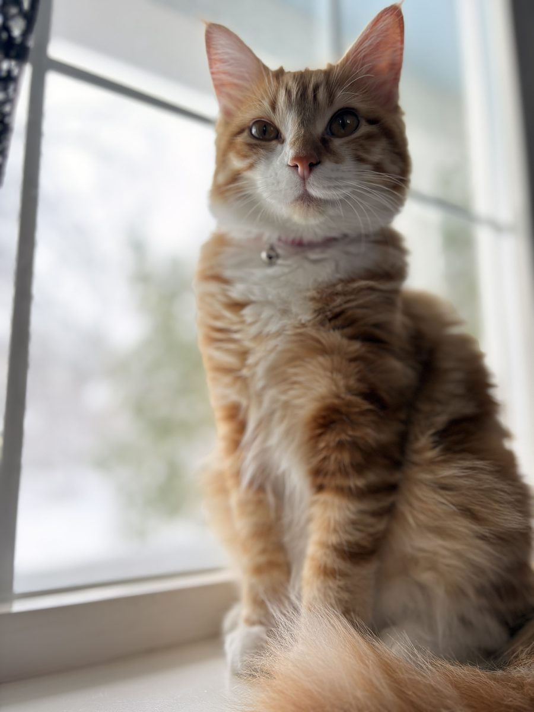
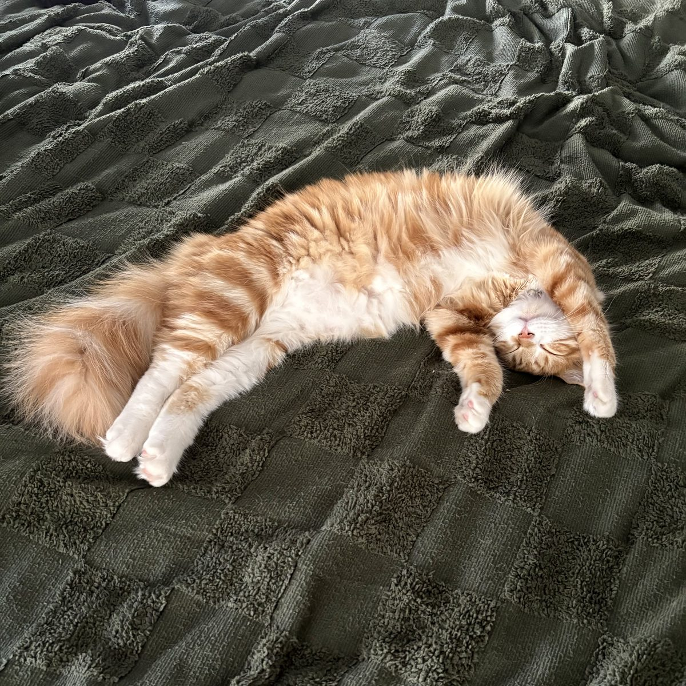

Bring Poppy Home
Poppy is our sweet orange and white tabby, and we miss her so much. If you have seen her, please text us.
REWARDAbout Poppy
- Looks like
- A friendly orange and white tabby with a fluffy tail and white paws.
- Personality
- Very sweet and friendly with people.
- Last seen
- Just after midnight, early Thursday, October 15, 2026, leaving through our garage doggie door. We think she was likely scared off by arborists trimming trees in our court early that morning.
- Area
- Caughlin Ranch in southwest Reno (89519), near Village Green Park.
- Collar
- She is not wearing a collar. She slipped out of her pink bell collar, and we found it in the garden.
- Microchip
- Yes, Poppy is microchipped. Any vet or shelter can scan her.
- Reward
- Yes, a reward is offered for her safe return.
How you can help
- Check your garage, shed, and under your deck. Scared cats often hide quietly in tight, dark places nearby.
- If you see her, please text us right away, with a photo if you can.
- Share this page with neighbors and local groups.
If someone has taken Poppy in, or you know where she is, please reach out. No questions asked. We just want her home.
Photos and Videos

